概述
软件工程中，设计模式（design pattern）是对软件设计中普遍存在（反复出现） 的各种问题，所提出的解决方案。这个术语是由Erich Gamma等人在1990年代从建筑设计领域引入到计算机科学的。
设计模式的目的
编写软件过程中，程序员面临着来自耦合性，内聚性以及可维护性，可扩展性，重用性，灵活性等多方面的挑战，设计模式是为了让程序(软件)具有更好的：
- 代码重用性 (即：相同功能的代码，不用多次编写)
- 可读性 (即：编程规范性, 便于其他程序员的阅读和理解)
- 可扩展性 (即：当需要增加新的功能时，非常的方便，称为可维护)
- 可靠性 (即：当我们增加新的功能后，对原来的功能没有影响)
- 使程序呈现高内聚，低耦合的特性
UML复习
类图
基础
UML中的类图用于表示类、接口、实例之间相互的静态关系。如图：
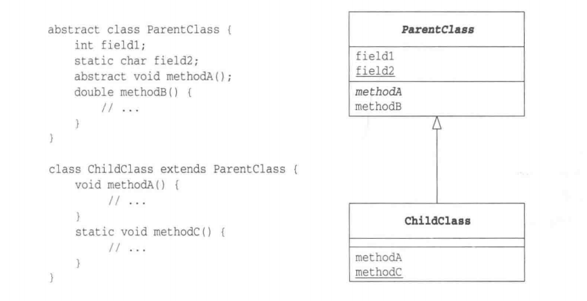
该图中实线空心三角箭头表示继承关系。下划线表示这是一个静态字段或静态方法，斜体表示这是一个抽象类或抽象方法。
接口与实现
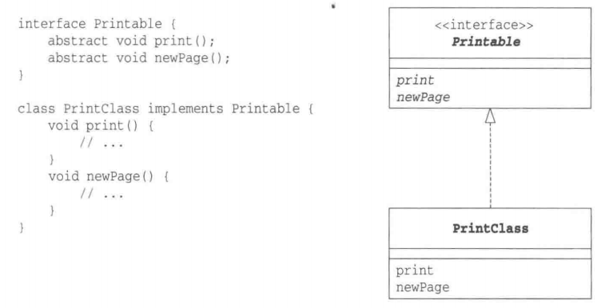
该图中虚线空心三角箭头表示实现关系。接口会在类图中使用<<interface>>表明。
聚合
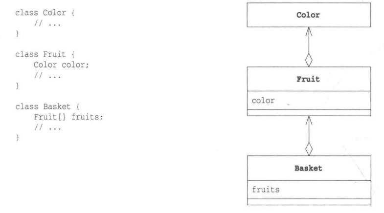
聚合是一种“持有”关系，比如Basket类中持有多个Fruit实例。实际上关联、聚合、组合都是一种持有关系，依赖则属于“半持有”的关系，它们的区别如下：
可见性
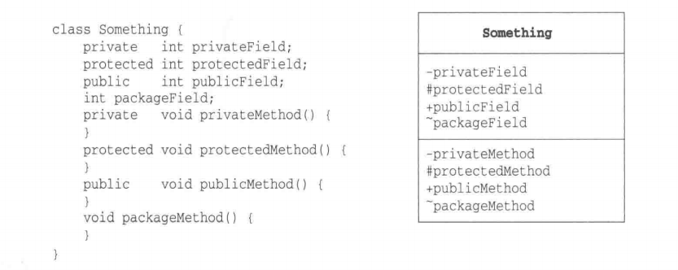
该图标识了方法和字段的可见性：
- “+”表示public
- “-“表示private
- “#”表示protect
- “~”表示包可见
时序图
UML的时序图用于表示程序在工作时其内部方法的调用顺序，以及事件的发生顺序。例：
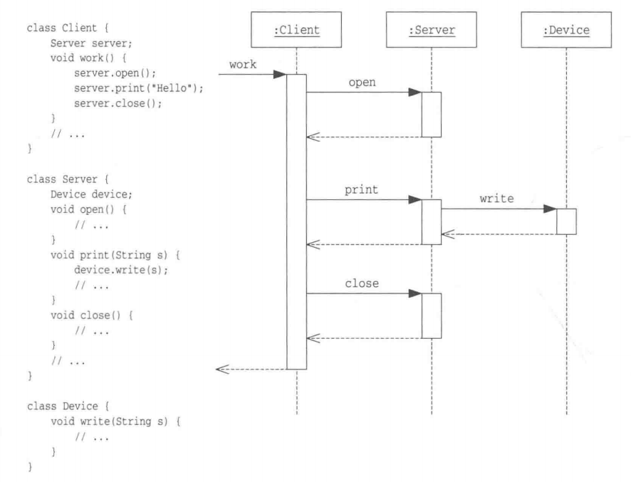
时序图上方的长方形表示类的实例，长方形向下延伸的虚线表示时间的流逝。黑色实线箭头表示方法调用，虚线箭头表示方法返回。
创建型模式
单例（Singleton）
作为对象的创建模式，单例模式确保某一个类只有一个实例，而且自行实例化并向整个系统提供这个实例。这个类称为单例类。
单例模式的使用场景：需要频繁进行创建和销毁的对象、创建对象耗时过多或耗费资源过多（重量级对象）但又经常用到的对象、工具类对象、频繁访问数据库或文件的对象。例如：Spring中bean对象的创建默认就是singleton。
饿汉式（立即加载）
静态常量
1 | public class StaticFinal { |
- 优点：类加载（static final变量在连接-准备阶段赋值）时就完成了对象的实例化，避免了线程同步问题。
- 缺点：如果从始至终没有用到该实例，会造成内存浪费。
静态代码块
1 | public class StaticBlock { |
优缺点同上。
懒汉式（延迟加载）
线程不安全
1 | public class NoSync { |
优点：延迟加载，调用getInstance方法时才创建对象，不会出现浪费内存的情况。
缺点：不能保证线程安全。在多线程情况下，一个线程进入if(instance == null)判断语句块，还未来得及往下执行，另一个线程也正在判断该语句，此时便会产生多个实例。
实际开发中，不能使用该方式。
线程不安全-同步代码块
1 | public class SyncBlock { |
不能保证线程安全，原因同上。
线程安全-同步方法
1 | public class SyncMethod { |
优点：延迟加载，保证了线程安全。
缺点：效率低。实例化只需要执行一次就够了，但是以后每个线程每次调用getInstance都要进行同步加锁。
实际开发中，不推荐该方式。
双重检查（Double Check）
1 | public class DoubleCheck { |
双重检查是”线程不安全-同步代码块“与”线程安全-同步方法“的改进，volatile修饰变量保证可见性，即使有多个线程同时进行”第一个条件判断“，在同步代码块中也有第二个条件判断保证只会创建一个实例。同时解决了使用同步方法效率低的问题，因为线程多次调用getInstance只是第一次有同步加锁操作。
实际开发中，推荐使用。
静态内部类
1 | public class StaticInnerClass { |
由于外部类加载时不会同时加载内部类，因此只有再调用getInstance方法时才会加载内部类，并在内部类类加载阶段的连接-准备阶段赋值。
该方式是对饿汉式的改进，既能避免线程同步问题，又能做到延迟加载，避免内存的浪费。
实际开发中，推荐使用。
枚举
1 | public enum EnumSingleton { |
最简单最推荐的方式。该方式不仅能避免线程同步问题，还能防止反序列化重新创建新的对象。
简单工厂（Simple Factory）
简单工厂模式是类的创建模式，又叫做静态工厂方法（Static Factory Method）模式。简单工厂模式是由一个工厂对象决定创建出哪一种产品类的实例。
场景：假设现在我们要实现一个登录功能，需要满足多种登录方式，那么自然的方式就是建立一个各种登录方式都适用的接口，使用的时候再判断具体创建哪种登录方式的实现类。如图：
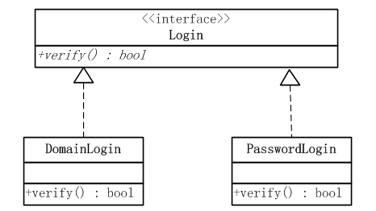
源代码：
1 | public interface Login { |
1 | public class DomainLogin implements Login { |
1 | public class PasswordLogin implements Login { |
我们还需要一个工厂类LoginFactory，根据调用者不同的要求，创建出不同的登录对象并返回。而如果碰到不合法的要求，会返回一个Runtime异常。
1 | public class LoginFactory { |
测试类：
1 | /** |
简单工厂模式的结构如下图：
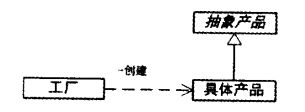
优点：模式的核心是工厂类。这个类含有必要的逻辑判断，可以决定在什么时候创建哪一个登录验证类的实例，而调用者则可以免除直接创建对象的责任。简单工厂模式通过这种做法实现了对责任的分割，当系统引入新的登录方式的时候无需修改调用者。
缺点：工厂类集中了所以的创建逻辑，当有复杂的多层次等级结构时，所有的业务逻辑都在这个工厂类中实现。什么时候它不能工作了，整个系统都会受到影响。
转载自：java_my_life.
工厂方法（Factory Method）
工厂方法模式：定义一个创建产品对象的工厂接口，将实际创建工作推迟到工厂子类中。
场景：某财务系统需要支持对数据库中的员工薪资进行导出，并且支持多种格式如：HTML、PDF等，每种格式导出的文件结构不同，比如有标准结构和财务需要的结构两种。
如果使用简单工厂模式，则工厂类必定过于臃肿。因为简单工厂模式只有一个工厂类，它需要处理所有的创建的逻辑。假如以上需求支持n种导出的格式以及2种导出的结构，那工厂类则需要2*n个if else语句来创建2*n种不同的类型。如果日后需求不断增加，则后果不堪设想。
这时候就需要工厂方法模式来处理以上需求。在工厂方法模式中，核心的工厂类不再负责所有的对象的创建，而是将具体创建的工作交给子类去做。这个核心类则摇身一变，成为了一个抽象工厂角色，仅负责给出具体工厂子类必须实现的接口，而不接触哪一个类应当被实例化这种细节。
这种进一步抽象化的结果，使这种工厂方法模式可以用来允许系统在不修改具体工厂角色的情况下引进新的产品，引进一个新的产品则再创建一个新的工厂即可。这一特点无疑使得工厂方法模式具有超过简单工厂模式的优越性。下面就针对以上需求设计UML图：
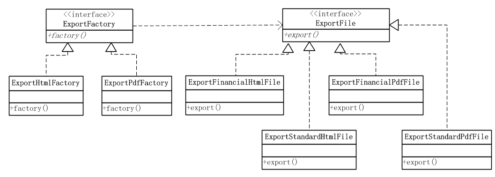
从上图可以看出，这个使用工厂方法模式的系统涉及到以下角色：
- 抽象工厂（ExportFactory）角色：担任这个角色的是工厂方法模式的核心，任何在模式中创建对象的工厂类必须实现这个接口。在实际的系统中，这个角色也常常使用抽象类实现。
- 具体工厂（ExportHtmlFactory、ExportPdfFactory）角色：担任这个角色的是实现了抽象工厂接口的具体Java类。具体工厂角色含有与业务密切相关的逻辑，并且受到使用者的调用以创建导出类（如：ExportStandardHtmlFile）。假如我们新增了一个需求：导出CSV格式，则只需要新建一个实现ExportFactory接口的ExportCsvFactory工厂类即可。
- 抽象导出（ExportFile）角色：具体工厂角色所创建对象的超类，也就是所有导出类的共同父类或共同拥有的接口。在实际的系统中，这个角色也常常使用抽象类实现。
- 具体导出（ExportStandardHtmlFile等）角色：这个角色实现了抽象导出（ExportFile）角色所声明的接口，具体工厂角色所创建的每一个对象都是某个具体导出角色的实例。
简单工厂模式可以看作是工厂方法模式的特例，设想如果非常确定一个系统只需要一个具体工厂类，那么不妨把抽象工厂类合并到具体工厂类中去。由于只有一个具体工厂类，所以不妨将工厂方法改为静态方法，这时候就得到了简单工厂模式。
转载自：java_my_life.
抽象工厂（Abstract Factory）
工厂方法模式中一个工厂类只能生产一种抽象产品类，比如上面的例子每一个具体工厂只能生产导出文件对象，而抽象工厂模式中一个具体工厂可以生产多种产品。还是以上面的场景为例，假设现在我们新增一个需求：该财务系统不仅要实现导出薪资文件功能，还要实现导入财务报表功能，假设财务报表有HTML和PDF两种格式，该怎么做？
- 我们只需要将ExportFactory接口与ExportHtmlFactory、ExportPdfFactory实现类改名为Factory接口与HtmlFactory、PdfFactory，然后在接口与实现类种添加getImportFile方法；
- 创建ImportFile接口与对应的ImportHtmlFile、ImportPdfFile实现类；
- 在工厂类的getImportFile方法中创建ImportHtmlFile、ImportPdfFile实现类对象。
以下是一个更容易理解的例子：
简单工厂模式：现有一个鼠标工厂，专业生产鼠标，给参数0，生产戴尔鼠标，给参数1，生产惠普鼠标。
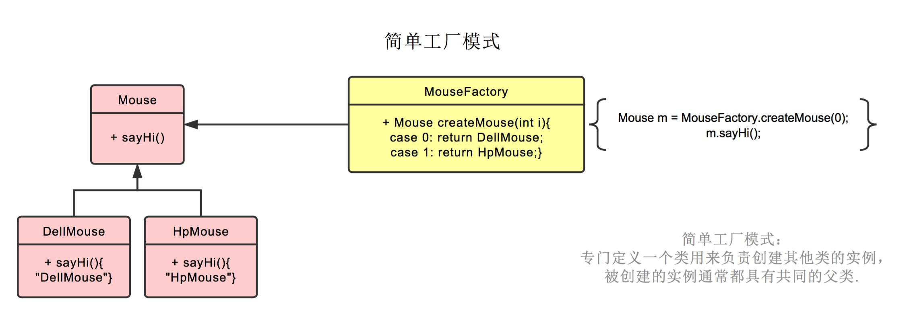
工厂方法模式：将简单工厂模式的方法中的判断逻辑抽取出来成为工作子类，实现解耦。
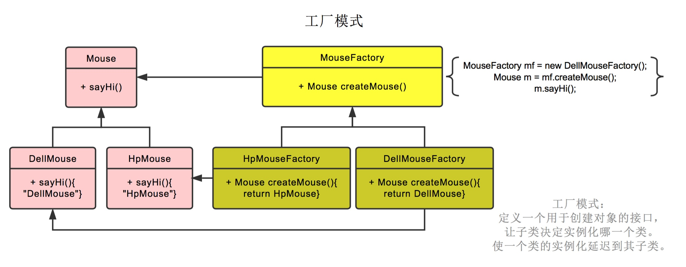
当新增需求比如该鼠标工厂接了联想的订单，只需要新增一个LenovoMouseFactory即可，如果使用简单工厂模式的话则需要修改工厂类的代码，不符合开闭原则。
抽象工厂：假设我们的鼠标工厂越发红火，拓展了业务，不再只生产鼠标，同时还生产键盘等其他PC外设，那么我们只需要在原有的工厂中新增产品线即可。
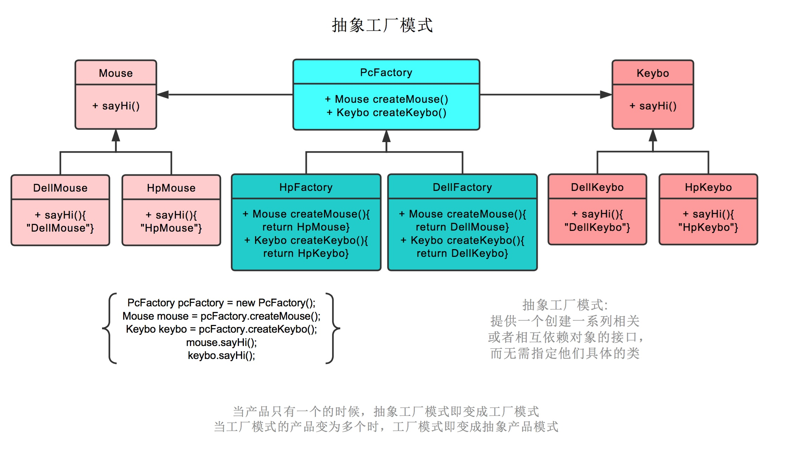
原型（Prototype）
原型模式：通过给出一个原型对象来指明所有创建的对象的类型，然后用复制这个原型对象的办法创建出更多同类型的对象。
Object类提供了一个clone()方法，该方法可以将一个对象复制一份，但是需要实现了clone方法的Java类必须实现接口Cloneable，此时在另一个类中就可以通过调用该Java类的clone方法获取克隆对象了（浅拷贝）。我们可以使用该特性实现原型模式。
关于深拷贝与浅拷贝：
Shallow Copy
B对A的浅拷贝：创建新对象B，将A的字段值复制到B。
- 如果该字段值是对对象（例如，存储器地址）的引用，则复制该引用（地址）。因此如果A或B修改了引用的对象，会在另一个中可见。
- 如果该字段值是基本数据类型，则复制值。
Java中如果要对对象A进行浅拷贝，则A必须实现Cloneable接口，并重写继承自Object的clone()方法， then
A B = (A) new A().clone();示例：
1
2
3
4
5
6
7
8
9
10
11
12
13
14
15
16
17
18
19
20
21
22
23
24
25
26
27
28
29
30
31
32
33class C{
int a;
int b;
C(int a, int b){
this.a = a;
this.b = b;
}
}
class A implements Cloneable{
int val;
C object;
A(int val, C obj){
this.val = val;
this.object = obj;
}
public Object clone(){
try{
return super.clone();
}catch(CloneNotSupportedException e){
e.printStackTrace();
return null;
}
}
}
class Test{
public static void main(String[] args){
A aObj = new A(1, new C(2,3));
A bObj = (A) aObj.clone();
}
}如上代码中，如果bObj修改了引用类型C object中b的值为10，那么对象aObj中引用类型C object中b的值也是10，因为浅拷贝只是拷贝了aObj中object的引用（地址）给bObj。
Deep Copy
- B对A的深拷贝：创建新对象B，对于A的引用类型字段，在B中创建该引用类型对象的拷贝，而非像浅拷贝中那样只拷贝引用（地址）。
- 要实现深拷贝，不仅A需要实现Cloneable接口并重写clone方法，A中的引用类型C也需要实现Cloneable接口并重写clone方法。
- 深拷贝也可通过对象序列化的方式实现ByteArrayInputStream、ByteArrayOutputStream、ObjectInputStream、ObjectOutputStream。
示例：
1 | class C implements Cloneable{ |
Spring中原型模式的应用：当指定bean的scope为prototype时，表示bean对象的创建是多例的，每次调用getBean方法都会复制一份。（深拷贝）
结构型模式
适配器（Adapter）
适配器模式将某个类的接口转换为客户端期望的另一个接口表示（现实生活中的转接头，充电头都是适配器），主要目的是解决兼容性问题，让原本因接口不匹配不能一起工作的两个类可以协同工作。
从用户的角度来看，用户是看不到被适配者目标的，感觉只是和适配器接口交互。
类适配器
实现方式：Adapter类（适配器类）通过：继承src类（被适配类），实现dst接口（目标接口），完成src到dst的适配。
场景：以电源适配器为例，我们需要将220V（被适配类）的电压转换为5V（目标接口）：
1 | /** |
1 | /** |
1 | /** |
1 | /** |
对象适配器
实现方式：Adapter类（适配器类）通过：持有src类（被适配类）的实例，实现dst接口（目标接口），完成src到dst的适配。
根据“组合/聚合复用原则”，在系统中尽量使用聚合关系来替代继承关系，对象适配器模式是对类适配器的改进。
1 | /** |
1 | public class Test { |
接口适配器
又叫默认适配器模式，适用情景：使用者只想使用一个接口的部分方法，此时我们就需要一个默认适配器。
当不需要全部实现接口提供的方法时，可先设计一个抽象类适配器，并为该接口中每个方法提供一个默认实现（空方法），那么该抽象类的子类可有选择地覆盖父类的某些方法来实现需求。
1 | public interface ALotOfMethod { |
1 | public abstract class DefaultAdapter implements ALotOfMethod { |
1 | public class Test { |
Spring MVC中的HandlerAdapter就使用了适配器模式：
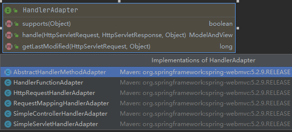
HandlerAdapter的实现子类使得每一种Controller都有对应的适配器实现类。
装饰器（Decorator）
装饰模式又名包装(Wrapper)模式。装饰模式以对客户端透明的方式动态扩展对象的功能，是继承关系的一个替代方案。
装饰模式的类图：

在装饰模式中的角色有：
- 抽象构件(Component)角色：给出一个抽象接口，以规范准备接收增强功能的对象。
- 具体构件(ConcreteComponent)角色：定义一个将要接收增强的类。
- 装饰(Decorator)角色：持有一个抽象构建角色，并通过构造器注入具体构件角色。
- 具体装饰(ConcreteDecorator)角色：负责给构件对象附加增强功能。
例如，我们可以通过覆盖Http请求的方法来对数据进行转义，这里使用了装饰器模式。HttpServletRequest接口属于抽象构件角色；各服务器厂商的Request实现类属于具体构件角色；装饰角色为官方提供的HttpServletRequestWrapper类，其持有厂商的Request实现类；作为用户，我们只需要继承HttpServletRequestWrapper类作为具体装饰角色，重写Wrapper类的方法即可。
装饰模式在JDK中的应用有I/O标准库的设计，以InputStream为例：

上图中：
- 抽象构件(Component)角色：由InputStream扮演。这是一个抽象类，为各种子类型提供统一的接口。
- 具体构件(ConcreteComponent)角色：由ByteArrayInputStream、FileInputStream、PipedInputStream、StringBufferInputStream等类扮演。它们实现了抽象构件角色所规定的接口。
- 抽象装饰(Decorator)角色：由FilterInputStream扮演。它实现了InputStream所规定的接口。
- 具体装饰(ConcreteDecorator)角色：由几个类扮演，分别是BufferedInputStream、DataInputStream以及两个不常用到的类LineNumberInputStream、PushbackInputStream。
代理（Proxy）
参见：JDK动态代理.
代理模式与装饰模式在代码实现形式上几乎是一致的，区别只在于抽象层面我们分别赋予它们的含义。
行为模式
模板方法（Template Method）
模板方法模式：准备一个抽象类，将部分逻辑以具体方法以及具体构造函数的形式实现，然后声明一些抽象方法来迫使子类实现剩余的逻辑。不同的子类可以以不同的方式实现这些抽象方法，从而对剩余的逻辑有不同的实现。这就是模板方法模式的用意。
JDK中对模板方法模式最经典的应用就是J.U.C包中的AbstractQueuedSynchronizer类了。参考JUC之锁。
模板方法模式的类图如下：
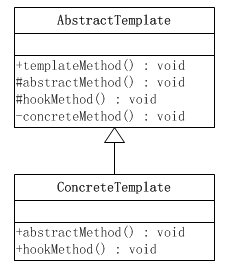
这里涉及到两个角色：
抽象模板(Abstract Template)角色有如下责任：
- 定义了一个或多个抽象操作，以便让子类实现。这些抽象操作叫做基本操作，它们是一个顶级逻辑的组成步骤。
- 定义并实现了一个模板方法。这个模板方法一般是一个具体方法，它给出了一个顶级逻辑的骨架，而逻辑的组成步骤在相应的抽象操作中，推迟到子类实现。顶级逻辑也有可能调用一些具体方法。
具体模板(Concrete Template)角色又如下责任：
- 实现父类所定义的一个或多个抽象方法，它们是一个顶级逻辑的组成步骤。
- 每一个抽象模板角色都可以有任意多个具体模板角色与之对应，而每一个具体模板角色都可以给出这些抽象方法（也就是顶级逻辑的组成步骤）的不同实现，从而使得顶级逻辑的实现各不相同。
策略（Strategy）
策略模式：针对一组算法，将每一个算法封装到具有共同接口的独立的类中，从而使得它们可以相互替换。
策略模式类图：
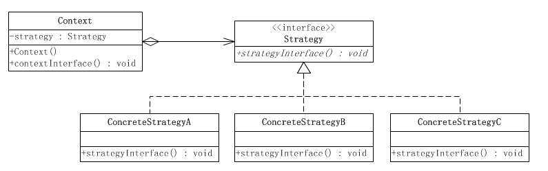
这个模式涉及到三个角色：
- 环境(Context)角色：持有一个Strategy的引用。
- 抽象策略(Strategy)角色：这是一个抽象角色，通常由一个接口或抽象类实现。此角色给出所有的具体策略类所需的接口。
- 具体策略(ConcreteStrategy)角色：包装了相关的算法或行为。
在客户端通过控制反转创建具体策略角色的前提下，策略模式使得客户端可以配置式地随时插入算法（新建一个ConcreteStrategy类）或更换算法。
场景：假设现在要设计一个贩卖各类书籍的电子商务网站的购物车系统。一个最简单的情况就是把所有货品的单价乘上数量，但是实际情况肯定比这要复杂。比如，本网站可能对所有的高级会员提供每本20%的促销折扣；对中级会员提供每本10%的促销折扣；对初级会员没有折扣。
根据描述，折扣是根据以下的几个算法中的一个进行的：
算法一：对初级会员没有折扣。
算法二：对中级会员提供10%的促销折扣。
算法三：对高级会员提供20%的促销折扣。

代码如下：
1 | public interface MemberStrategy { |
1 | public class PrimaryMemberStrategy implements MemberStrategy { |
1 | public class IntermediateMemberStrategy implements MemberStrategy { |
1 | public class AdvancedMemberStrategy implements MemberStrategy { |
1 | public class Client { |
转载自：java_my_life.
观察者（Observer）
观察者模式：观察者模式定义了一种一对多的依赖关系，让多个观察者对象同时监听某一个主题对象。这个主题对象在状态上发生变化时，会通知所有观察者对象，使它们能够自动更新自己。
一个软件系统常常要求在某一个对象的状态发生变化的时候，某些其他的对象做出相应的改变。观察者模式是满足这一要求的各种设计方案中最重要的一种。
观察者模式类图如下：

观察者模式所涉及的角色有：
抽象主题(Subject)角色：抽象主题角色把所有对观察者对象的引用保存在一个集合（比如ArrayList对象）里，每个主题都可以有任何数量的观察者。抽象主题提供可以增加和删除观察者对象的方法，抽象主题角色又叫做抽象被观察者(Observable)角色。
具体主题(ConcreteSubject)角色：具体主题的内部状态改变时，给所有登记过的观察者发出通知。具体主题角色又叫做具体被观察者(Concrete Observable)角色。
抽象观察者(Observer)角色：为所有的具体观察者定义一个接口，在得到主题的通知时更新自己，这个接口叫做更新接口。
具体观察者(ConcreteObserver)角色：存储与主题的状态自恰的状态。具体观察者角色实现抽象观察者角色所要求的更新接口，以便使本身的状态与主题的状态相协调。如果需要，具体观察者角色可以保持一个指向具体主题对象的引用。
代码如下：
1 | public class Subject { |
1 | public interface Observer { |
1 | public class ConcreteObserver implements Observer{ |
1 | public class ConcreteSubject extends Subject{ |
1 | public class Client { |
拉模型与推模型
在观察者模式中，又分为推模型和拉模型两种方式。
- 推模型：主题对象向观察者推送主题的详细信息，不管观察者是否需要，推送的信息通常是主题对象的全部或部分数据。
- 拉模型：主题对象在通知观察者时，只传递少量信息。如果观察者需要更具体的信息，由观察者主动到主题对象中获取，相当于是观察者从主题对象中拉数据。一般这种模型的实现中，会把主题对象自身的引用通过update()方法传递给观察者，这样在观察者需要获取数据的时候，就可以通过这个引用来获取了。
很显然上述的代码示例是推模型。
JAVA提供的对观察者模式的支持
在JAVA语言的java.util库里面，提供了一个Observable类以及一个Observer接口，构成JAVA语言对观察者模式的支持。
Observer接口
这个接口只定义了一个方法，即update()方法，当被观察者对象的状态发生变化时，被观察者对象的notifyObservers()方法就会调用这一方法。
所有的观察者类都需要实现该接口。
1 | public interface Observer { |
Observable类
被观察者类（主题类）都是java.util.Observable类的子类。java.util.Observable提供公开的方法支持观察者对象，这些方法中有两个对Observable的子类非常重要：一个是setChanged()，另一个是notifyObservers()。第一方法setChanged()被调用之后会设置一个内部标记变量，代表被观察者对象的状态发生了变化。第二个是notifyObservers()，这个方法被调用时，会调用所有登记过的观察者对象的update()方法，使这些观察者对象可以更新自己。
责任链（Chain Of Responsibility）
责任链模式：在责任链模式里，很多对象由每一个对象对其下家的引用而连接起来形成一条链。请求在这个链上传递，直到链上的某一个对象决定处理此请求。发出这个请求的客户端并不知道链上的哪一个对象最终处理这个请求，这使得系统可以在不影响客户端的情况下动态地重新组织和分配责任。
UML类图：

责任链模式涉及到的角色如下所示：
抽象处理者(Handler)角色：定义出一个处理请求的接口。如果需要，接口可以定义出一个方法以设定和返回对下家的引用。这个角色通常由一个Java抽象类或者Java接口实现。上图中Handler类的聚合关系给出了具体子类对下家的引用，抽象方法handleRequest()规范了子类处理请求的操作。
具体处理者(ConcreteHandler)角色：具体处理者接到请求后，可以选择将请求处理掉，或者将请求传给下家。由于具体处理者持有对下家的引用，因此，如果需要，具体处理者可以访问下家。
场景：公司申请聚餐费用的管理。
申请聚餐费用的大致流程一般是：由申请人先填写申请单，然后交给领导审批，如果申请批准下来，领导会通知申请人审批通过，然后申请人去财务领取费用，如果没有批准下来，领导会通知申请人审批未通过，此事也就此作罢。
不同级别的领导，对于审批的额度是不一样的，比如，项目经理只能审批500元以内的申请；部门经理能审批1000元以内的申请；而总经理可以审核任意额度的申请。
也就是说，当某人提出聚餐费用申请的请求后，该请求会经由项目经理、部门经理、总经理之中的某一位领导来进行相应的处理，但是提出申请的人并不知道最终会由谁来处理他的请求，一般申请人是把自己的申请提交给项目经理，或许最后是由总经理来处理他的请求。
可以使用责任链模式来实现上述功能：当某人提出聚餐费用申请的请求后，该请求会在 项目经理—〉部门经理—〉总经理 这样一条领导处理链上进行传递，发出请求的人并不知道谁会来处理他的请求，每个领导会根据自己的职责范围，来判断是处理请求还是把请求交给更高级别的领导，只要有领导处理了，传递就结束了。
类图如下：

Spring MVC中的HandlerExecutionChain就使用到了责任链模式。
Spring中的设计模式总结
参考：https://snailclimb.gitee.io/javaguide/#/docs/system-design/framework/spring/Spring-Design-Patterns